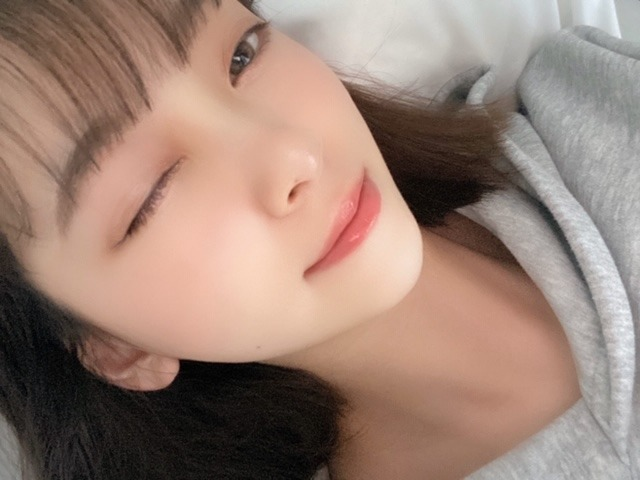

2020/0501Friご
5月ですね
じわりと梅雨に近づいてきてますが
雨の日に聞きたくなる曲や
映画ドラマアニメはなんですか？
教えてください☺︎
私は映像だと
" 恋は雨上がりのように "
" 海街diary "
" 耳をすませば "
" 言の葉の庭 "
は欠かせません!

そしてそして
カップスターさんの企画で
今日から毎月1話ずつ
" 乃木坂毎月劇場 " が公開されていきます!
東京03さんとオークラさん脚本で
やらせていただきました☺︎
ドラマ遊戯みたいにいかない 以来でしたが
やはり楽しい現場でした!
是非見てください☺︎

質問返し
やってみたかったバイトとか
仕事ってありますか？
→バイトはコンビニ、パン屋さん、
和菓子屋さん、ファミレス
仕事は保育士さん、化粧品販売員、
ウエディングプランナー、
芸能事務所の新人育成かな

ブログとかインスタとかにお料理
よく載せてるけど、
いつからお料理始めましたか？
あと、資格とか持ってますか？？
前から気になってたので！
わたしもおうちでみおなちゃん
の真似して作ってみます！
→高校で料理クラブに入ったり
授業で食物検定をとってから
ちゃんとしだしたかなぁ☺︎
中学の時は簡単な和食くらいしか
作れなかったけどお母さんに
教えてもらったりレシピ見ながら
レパートリーを地道に増やしています！笑
最近よく聴く曲教えて！
→ここ1週間で聴いた曲ランキング
そのまま載せますね
1 リッツパーティー / back numberさん
2 Beautiful / Wanna Oneさん
3 晴れた日に... / 久石譲さん
4 星のない世界 / aikoさん
5 最大公約数 / RADWIMPSさん
6 メッセージ / チャットモンチーさん
7 ブルー / フジファブリックさん
8 Blueming / IUさん
9 僕の名前を / back numberさん
10 西藤公園 / back numberさん
次あたりに明るい髪色にしたりしますかね？
→なんだかんだ暗髪気に入っていて...
でも気分で明るくする時もあるかも！
最近あった面白いエピソードは何ですか?
→家族でトランプのダウトをしたときに
お母さんがルール分かってなくて
全部の手持ちのカードを出して
ダウト！って言ったとき。笑
みんなで笑い転げました。笑
外国に住むならどこがいい？
→のんびりとしたヨーロッパがいいなぁ
ニースやコルシカ島に行って、
いつか住みたいなって思ったよ！
髪を染めようと思ってるんだけど
何色がいいと思いますか？男子です！
未央奈の意見を参考にしたいです(^^)
→私好みにしてくれるの？嬉しい♪
なんだかんだ黒髪が1番すきです！
四期生で1番仲良いのは誰？
三期生で1番仲良いのは誰？
→1番とかは無いかなぁ
れんか、しおり、与田ちゃんとは
仕事も一緒なことが多くて
合間に話すくらいかな！
もっとみんなと話したい〜☺︎はなそっと☺︎笑
髪の毛ボサボサのときとかないんですか
→寝癖つきやすくてよくメンバーに
いじられますよ
アーティスティックな寝癖らしい。笑
以上

ハワイで食べたステーキが美味しくて
いまとてもステーキが食べたいです

ではでは
2020/05/01 14:06


コメント(440)
雨の日に聴きたくなる曲と映像かぁ
曲だと
“RAIN”とか“マーメイドラプソディ”かな！
映像だとなんだろ、、Do my bestとか見たくなるかもしれない
お！是非是非見るね！
じゃあまたね！
大好きです！
UY
やっぱりいつ見てもカワイイ未央奈は
最後の写真のピンとてもかわいいです！
それか気に入ってる髪型とか！
ブログ更新嬉しいよー
人生で1番面白かった漫画はNARUTOだなーNARUTOしかないなー
ハワイはさゆまいも行ってたけどクリスがいいよねーあとBLTとかもいいよー
ヨーロッパ住みたいよねー
映像で好きな作品だと、
四月は君の嘘
君の膵臓をたべたい
君の名は。
トイ・ストーリー
言の葉の庭
あたりが好きかな。
最近はドラえもんの映画とかも時々見てる。
今は、天気の子とジブリ映画が見たい気分。
さて、質問！ってまだ募集中なのかな？
もし１年間の休みをもらえたとして、その間何をしててもいいよ～って言われたら何する？
次が楽しみ！
って言ってたからこの前美容院行って
それっぽい髪型にしてもらった〜(´∀｀=)
（黒髪だけど笑）
早く握手会とかライブ行きたい｡ﾟ(ﾟ´Д｀ﾟ)ﾟ｡
体調に気をつけてね
四月は君の嘘
見てみてください‼️
雨の日に聞く曲はAAAの恋音と雨空だね！！
最近暑いよねー！
これからも頑張って下さい！
応援してます！体に気をつけて頑張って下さい！
ブログ更新お疲れ様︎ ︎☺︎
世のため人の為に日夜。
仕事に勤しんで居ります‼
いつもの何気ない世の中に早く戻りますように‼
気づけば梅雨も近いですね……早い。
自分は雨の日とかはなぜか坂本真綾さんの『DIVE』ってアルバムを聴きます。雰囲気がそれっぽいから？
いつもブログ更新ありがとうございます。
乃木坂毎月劇場楽しみにして見るね
頑張れカワイイ未央奈
可愛いなんて言っちゃ怒られそうだわ
質問で共感できることがあって嬉しい！
体調崩さないように！
好き！
とっても可愛いです笑
質問です
新4期生の中で仲良くしてるor仲良くしたいメンバーはいますか？
この時期の楽しみはメンバーのブログくらいしか楽しみがないから、未央奈がたくさん更新してくれるの嬉しい(*´˘`*)♡
休みの時期でも今までの体型キープできてる未央奈凄い…
私も見習わないと…笑
質問！
オールナイトニッポンで、まいちゅんとまちゅがそれぞれ乃木坂ダイエットっていってちょっと体力がいるセトリ発表してたけど、未央奈が乃木坂ダイエットするとしたら、どんなセトリ？
またブログ待ってるねー！
写真全部かわい〜(*˙˘˙)♡
雨の時って気分下がるから気分が上がるような曲良く聞くな〜
恋は雨上がりのように私も見たことある！面白いよね〜☺
今度もう1回みてみよ！！
私も最近料理してるよ！！
楽しいよね〜(*˙˘˙)♡
次のブログ更新も楽しみにしてます！
体に気をつけてね〜(*˙˘˙)
最大公約数私も大好きでよく聴きます！！backnumberさんやRADWIMPSさんが特に好きなんですかね？どちらも包容力のある声で響きますよね。
私もお料理がんばります！！！
どの写真もかわいいなー。
あー早く会いたいなぁ。
ずっと家にいると血の巡りが悪くなるから毎日散歩してる。
堀ちゃんも身体には気をつけてね。
またねー！
未央奈ちゃんのおすすめ曲聞いてみるね！
れんたんと久保ちゃんとの関わりあるの私得だぁ^_^
バナナマンと長く仕事をやってるとその感覚狂いそうですが。笑
インスタントファミリー
ワンダー君は太陽は心の底からオススメします！！
後はステイサム、マークウォールバーグ、マットデイモン主演の作品もおすすめです！
はやく公園でのんびりしたいな。
私の中で間違いなくビリージョエルのJust The Way You Areです！
是非一度聴いてみてください ♂️
未央奈さんは、アルコール飲料はよく飲みますか？
嫌なやつ嫌なやつ嫌なやつが頭から離れません笑
ブログ更新ありがとう！！
勉強に集中できなくてどうしよ〜って思ってたら
未央奈のブログが更新されたんだ！
コレ見たらやる気が出たので勉強します笑
きっかけ作ってくれてありがとう！！笑
で、勉強終わったらフルーツサンド食べるよ〜
おばあちゃんが買ってきてくれた
少し前に流行ったけど、
未央奈は休み中とかにフルーツサンド作ったりした？？
作ったら載せてほしいな
映画かぁ(＞＜)
あ！今日は金曜ロードショーで
塔の上のラプンツェルやるよ！！！！
楽しみだけど、塾のオンライン授業があるから
見るのは明日におあずけ。
ディズニーのプリンセスシリーズっていいよね〜
ロマンチックですごく好き。
ほっこりするし(◜ᴗ◝ )
じゃっ！
勉強がんばります！！！＼(^o^)／
ななみ
毎回楽しく拝見させてもらっています！
質問です！
一緒に共演して嬉しかった俳優さんや女優さんはいますか？
耳をすませばいいですよね！
私も好きです！！
質問です！
Qヘアケアは何してますか？
Qおすすめのシャンプーありますか？
Q顔がふっくらしてきました、( ;ᯅ; )
何かいいマッサージありますか？？
鈴賀(すずか)
雨の日にどうかは分からないけど、ワンピースのエピソードオブチョッパーは全然興味ない母も号泣してたのでおすすめですヽ(´▽｀)/
あとアニメじゃないけどピーターラビットおもしろかったよ♪あれは2.5次元？っていうのかな？
コメントする